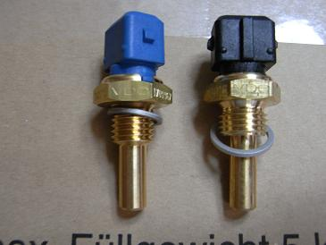
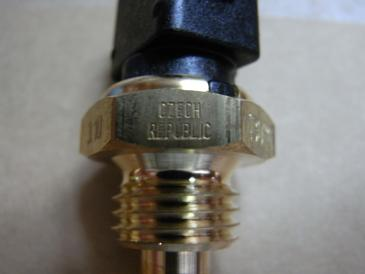
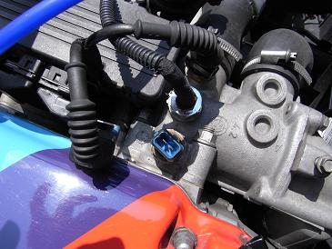
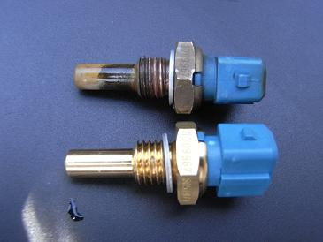
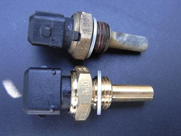
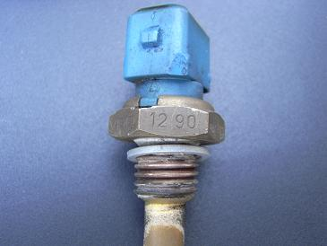
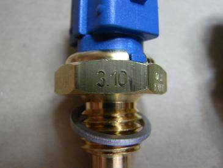

交換する2ヶ月ぐらい前からだろうか、水温センサーが上がってこなかったり、、 針がユラユラしたり、、ストンと落ちたり＾＾； たまに動きがおかしいのだ。 センサーではなくどこか電装系の不良っぽいが、気休めにセンサーを交換することにした。
|
 取り寄せたセンサー VDO製だ。
|
 「Czech Republic」製造国だろうか。 そういえば、3連メーター用に取り寄せたVDOのセンサーもチェコ製だった。
|
 M30の場合、センサーはサーモハウジングに刺さっている。 エンジンが冷え切っている時であれば、水が噴出すこともなく交換できる。
|
  新旧比較 水垢がついている。19年間お疲れ様でした。
|
  ちなみに、センサーには製造年月が刻印されている。 右が1990年12月 Mゴロー号は1991年1月11日にラインオフとなっているので、まぁその辺りだろう。 新しいほうは、2010年3月だ。 交換後はこれといって特に変化は無い。水温計の怪現象はしばらく様子をみてみようと思う。
|